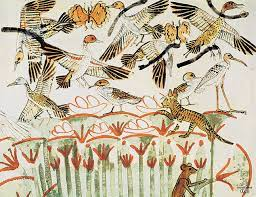

고대 이집트의 벽화에는 고양이를 새 사냥에 이용하는 그림이 있다.
고양이는 농경의 발달로 이집트 문명이 발생했을 무렵 곡식을 저장하는 창고에 모여든 쥐를 따라온 것이 시작으로 알려져 있다. 때문에 고양이는 길들여진 동물인 가축의 특성을 전혀 지니고 있지 않으며, 가축이라기보다는 인간과 공생관계라고 보는 것이 맞다. 이 후 아라비아 상인들의 실크로드를 통해 유럽과 아시아 전역으로 퍼져나갔으며, 항해를 하는 데에도 도움이 되어 인간과 함께 항해를 동행하면서 전 세계로 퍼져나갔다.